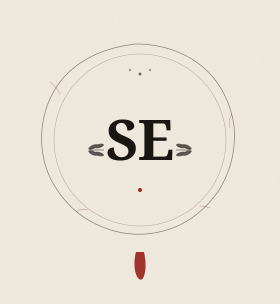
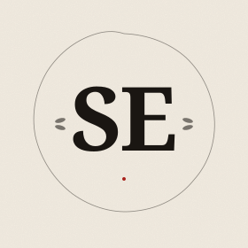

The Sigillum direction
Romans sealed important documents with hot wax and pressed their signet ring
into it — the first technology of tamper-evidence and authenticated identity.
That is, almost word-for-word, what sealed-env does in code.
The mark below is a tipographic interpretation — flat shapes, lapidary
Roman caps, no AI-stock gradients. Three views: hero lockup, sigillum solo,
and the wordmark alone.
Sigillum + wordmark + tagline
Use this for: repository README header, npm package page, social card, LinkedIn announcement post. The seal-bar between "sealed" and "env" replaces the hyphen — quiet narrative continuity with the sigillum.
Two depths of detail


When the sigillum doesn't fit
How it lives in the wild
The system, not just the logo
Three pieces, used in three different places:
logo-lockup.svg→ headers, social cards, big momentslogo-sigillum-mono.svg→ favicon, npm avatar, GitHub orglogo-type.svg→ footers, signatures, places without space for the sigillum
All three share the same DNA: cream paper (#f1ebe0), terracotta wax (#c4471f), ink (#1a1612). Italic Fraunces for the wordmark, Cinzel/Trajan for the lapidary caps in the sigillum. Same brand as your "El Almanaque" LinkedIn banner.
Tell me what to refine: tracking on the wordmark, sigillum proportions, year text wording, color depth on the wax, anything. Or pick one and I generate PNGs and integrate it into the npm package + README.